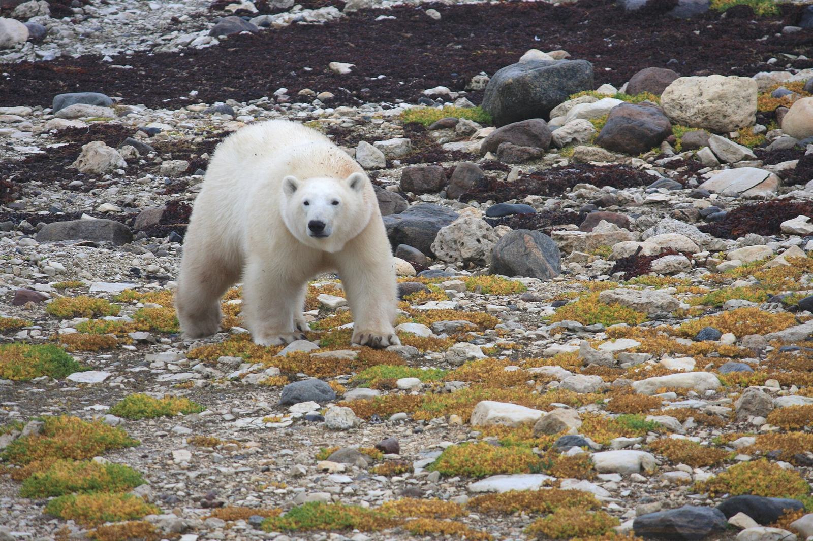

Every summer, Hudson Bay's polar bears come ashore and stop eating for months.
Polar bears hunt seals from sea ice. When the ice on Hudson Bay melts, the bears wait on land until it freezes again, living off their fat. That wait is getting longer. This page measures it, and asks how many bears the bay can still support.

On the ice, then off it
Polar bears eat mostly seals, and they catch them from the sea ice. A bear waits beside a hole in the ice, where a seal comes up to breathe. Without ice, a bear can hardly catch a seal at all.
Hudson Bay, in northern Canada, freezes over every winter and melts every summer. When the ice breaks up, the bears of Western Hudson Bay come ashore near the town of Churchill. They stay on land, eating almost nothing, until the bay freezes again in November or December.
Anything that holds a population back from growing is a limiting factor. Food, space, climate and competition can all be limiting factors. For these bears, the sea ice decides how much food they can reach.
An environment can support only so many of one species over time. That number is its carrying capacity. This lesson asks how the ice sets the carrying capacity for polar bears.
The fasting clock
Sometimes a bear wanders into Churchill and has to be held until the bay freezes. From 2009 to 2014, wildlife officers weighed 142 of these bears going in and coming out. The bears had water but no food.
- A typical bear lost about 1 kg of body mass each day.
- That is about 0.5% of its body mass each day.
- Free adult males on the shore lost weight at the same rate, so food found on land helps them little.
Source: Pilfold and others, 2016, Physiological and Biochemical Zoology 89: 377 to 388.
The same study asked how long the bears could last. If the fast stretched to 180 days, it estimated that 56 to 63% of young bears would starve. For adult males, the estimate was 18 to 24%.
The ice record
Scientists use satellite images to find when the ice breaks up and when it freezes again. From those dates, they work out how many days the bears spend on land each year.
| Year | Days on land | Note |
|---|---|---|
| 1985 | 105 | First year of the study |
| 1992 | 102 | Shortest stay on land |
| 2015 | 166 | Longest stay on land |
| 2018 | 145 | Last year of the study |
Source: Johnson and others, 2020, Conservation Physiology 8: coaa132. Bears come ashore about 25 days after the ice breaks up, so the study subtracts those days.
The numbers jump around from year to year. Across all 34 years, the trend line rises by about 9.9 days every ten years. The ice breaks up earlier in spring, and it freezes later in autumn.
Many students read one year as the trend. The year 2015 had 166 days, but 2018 had 145. Ecologists use the line through many years, not any single year.
The count
Counting bears across a huge, empty coast is hard. Scientists have used two methods. Early counts came from catching, marking and re-catching bears. Later counts came from flying over the coast and counting from the air.
| Year | Bears | Method |
|---|---|---|
| 1987 | 1,194 | Marking and re-catching |
| 2004 | 935 | Marking and re-catching |
| 2016 | 842 | Counting from the air |
| 2021 | 618 | Counting from the air |
Sources: Regehr and others, 2007, Journal of Wildlife Management 71: 2673 to 2683 (1987 and 2004). The 2016 and 2021 aerial surveys of the Governments of Nunavut and Manitoba, reported in 2022. Different methods give somewhat different numbers, so compare them with care.
A population living below its carrying capacity tends to grow. One living above it tends to shrink, because some animals cannot get enough food. Over time, the population settles near the carrying capacity.
When a limiting factor gets worse, the carrying capacity falls. Then the population falls too, until it settles at the new, lower level.
Model the bears
This is a teaching model, not a forecast. Its carrying capacity is a straight line through two points from Tables 1 and 2. At 105 days on land it is about 1,200 bears, and at 145 days about 620. Every run starts with 1,200 bears and lasts 40 years.
How does a longer stay on land change how many polar bears Hudson Bay can support?
- Ice season: bears hunt seals
- Days on land: bears fast
- Weight a bear loses on land, about 1 kg a day
- Bears (faint lines: your last two runs)
- Dashed line: carrying capacity
- Leave the slider at 105 days and let the run reach year 40. Look for: the bears stay level on the dashed line. Press Record.
- Move the slider to 145 days. Look for: the orange part of the clock grows, and the bears fall toward the new dashed line. Press Record at year 40.
- Move the slider to 180 days. Look for: how fast the bears fall at first, and where they level off. Press Record at year 40.
Use your evidence
In the model, 145 days on land ends near 645 bears. The 2021 count was 618, after years of stays around 145 days. Part of that agreement is built in: the model's line was drawn through the 2021 count.
The ice is the limiting factor for these bears. Each extra day on land is a day without seals. So the carrying capacity falls, and the population falls to meet it.
Which limiting factor?
Sort each fact about Hudson Bay's bears into the limiting factor it describes.
Factors can work together. A warmer climate cuts the ice season short, and so fewer seals get caught. Then the bears compete harder for what is left.
Explain with data
Use numbers from Tables 1 and 2, Section 02 and your recorded rows. A strong answer links the ice, the fast and the population.
Prompt: Western Hudson Bay had 1,194 polar bears in 1987 and 618 in 2021. Use data to explain how sea ice affects the carrying capacity for these bears.
- Ice data (1 mark): You show the stay on land grew, such as from 105 days in 1985 to 145 days in 2018.
- The fast (1 mark): You explain that bears cannot catch seals on land and lose about 1 kg a day.
- Carrying capacity (1 mark): You explain that fewer hunting days support fewer bears, so the carrying capacity falls.
- Population (1 mark): You use the counts or your model rows to show the population falling toward a lower level.
Your species may also depend on something that changes with the seasons. What sets its carrying capacity? Write one change to your Version 1.0 that would raise it, in your project journal.